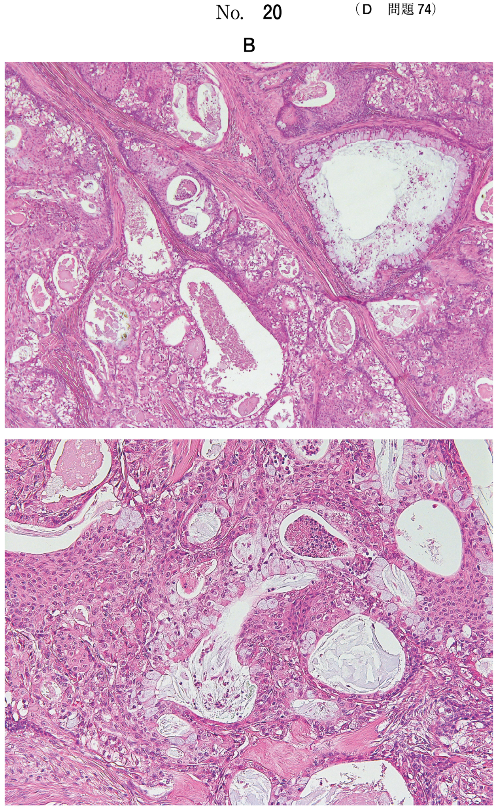
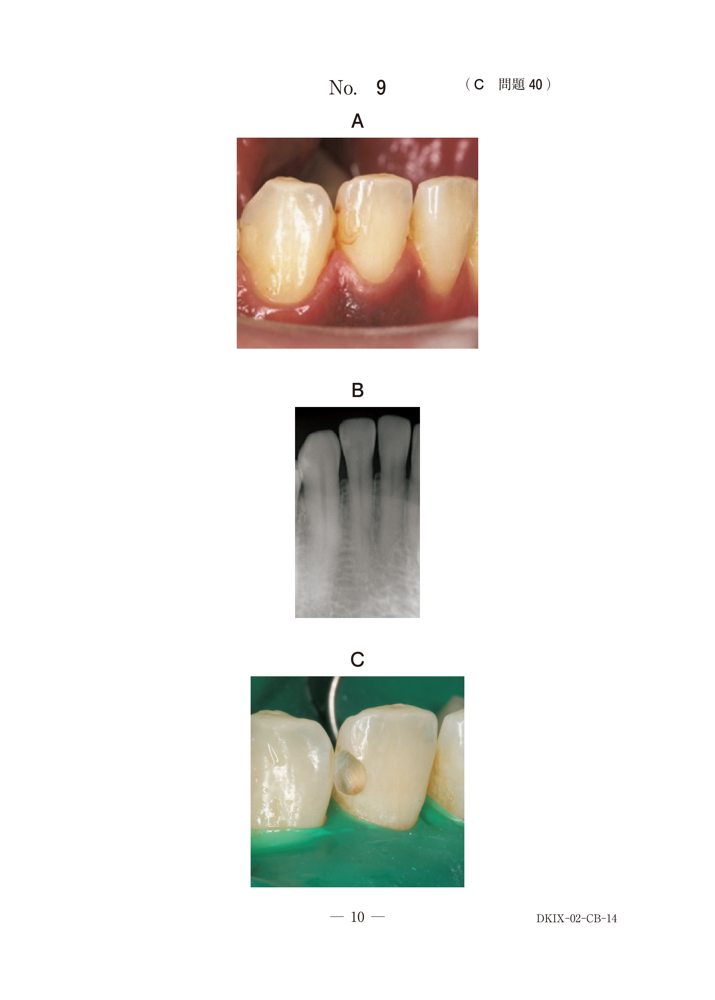
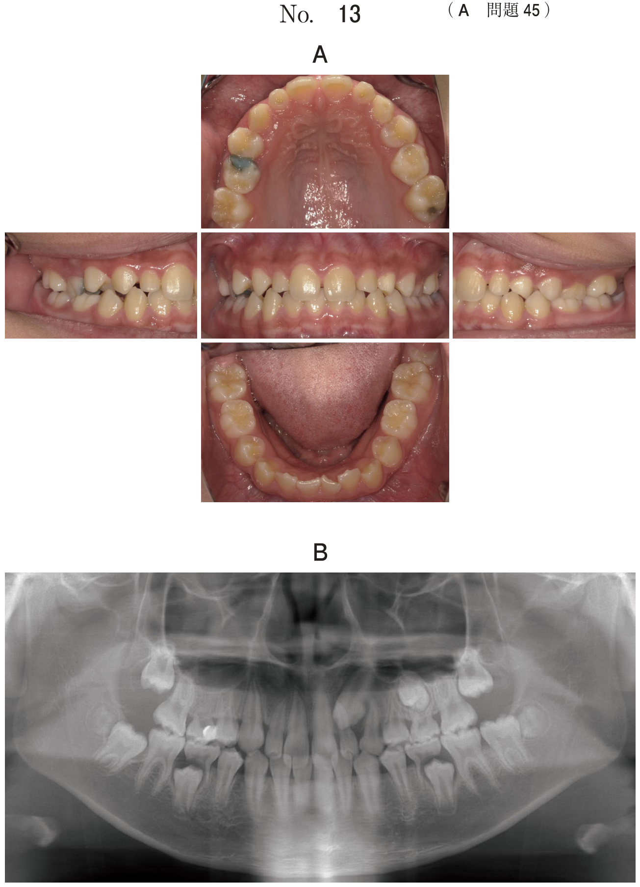

髄室開拡
髄室開拡とは
髄室開拡（髄腔開拡）は、歯冠側髄腔を開放して根管に器具を到達させるための経路を確保する操作。アクセス窩洞形成（access cavity preparation）ともよばれる。根管処置の第一歩であり、この段階での不備は以後のすべての器具操作に影響する。
髄室開拡の要件
1. 天蓋（髄室蓋）の十分な除去
- 残存すると根管口の上部に「ひさし」状に張り出し、器具の挿入や操作が妨げられる
- 天蓋直下の歯髄組織の除去も不完全となる
2. すべての根管口を窩洞に含める
- 咬合面から観察してすべての根管口が窩洞内に見える程度に拡大
- 上顎大臼歯のMB2（近心頬側第二根管）の見落としに注意
3. 直線的な挿入経路の確保
- 窩洞側壁から根管上部まで移行的かつ直線的に形成
- 確保できた場合、咬合面観で根管口が窩洞の最も外側に配置
髄室開拡の術式
| 段階 | 操作 | 使用器具 |
|---|---|---|
| ① 窩洞の概成 | 歯冠外形の中央部から切削開始 | ダイヤモンドポイント |
| ② 歯髄腔への穿孔 | 歯髄腔の広い部位を目標に穿孔 | ダイヤモンドポイント |
| ③ 天蓋の確認 | 残存天蓋を確認 | 有鉤探針 |
| ④ 天蓋の除去 | 掻き上げ操作で除去 | スチールラウンドバー |
| ⑤ 根管口の探索 | 髄床底の線状構造を指標 | 探針、ファイル |
- 穿孔後、次に行うのは天蓋の除去
- 天蓋の確認には有鉤探針を使用
- 天蓋除去にはスチールラウンドバーの掻き上げ操作
髄室開拡時の留意点
| 留意点 | 対策 |
|---|---|
| 髄床底の損傷（穿孔） | 天蓋と髄床底の色調の違いを指標（髄床底は暗い色調） |
| 髄角部歯髄の残存 | 天蓋除去時に髄角部も確実に除去 |
| 根管口の見落とし | 髄床底の黒い線状構造を指標に探索 |
| 切削方向の誤認 | 傾斜歯・挺転歯は植立方向を十分確認 |
根管口の同定
髄床底には根管口をつなぐ黒い線状構造がしばしば観察され、根管口探索の指標となる。
上顎大臼歯のMB2（近心頬側第二根管）
- MB（近心頬側根管口）とP（口蓋根管口）を結ぶ線上、MBのやや口蓋側に位置
- 見落としやすく、再根管治療の原因となることがある
- マイクロスコープやCBCTが根管口同定に有用
根管上部のフレアー形成
フレアー形成（coronal flaring）は、根管口明示・根管口の漏斗状拡大ともよばれ、根管上部（1/2〜1/3程度）にやや強めの外開き形態を付与する操作。
- ゲーツグリッデンドリル：長円形の短い刃部、先端には刃がない
- 直線的な挿入経路の確保に有効
過去問
髄室開拡の手順
67歳の男性。下顎右側第一大臼歯の激痛を主訴として来院した。疼痛は1週前から続いているという。抜髄を行うこととした。術中の口腔内写真（別冊No.5）を別に示す。
次に行う処置はどれか。1つ選べ。

b 天蓋の除去
c 根管長の測定
d 根管の拡大・形成
e 髄床底穿孔部の閉鎖
【解説】写真では歯髄腔への穿孔が完了した状態である。次に行うのは天蓋の除去。根管長測定や根管拡大・形成は、天蓋を除去して根管口を明示した後に行う。
35歳の女性。下顎右側第二大臼歯の咀嚼時痛を主訴として来院した。慢性潰瘍性歯髄炎と診断し、抜髄を行うこととした。初診時のエックス線画像（別冊No.27A）と術中の口腔内写真（別冊No.27B）を別に示す。
次に用いるのはどれか。1つ選べ。

b Hファイル
c クレンザー
d ゲーツグリデンドリル
e スプーンエキスカベーター
【解説】写真では歯髄腔への穿孔後、天蓋除去前の状態である。残存する天蓋の確認には有鉤探針が有用。天蓋の有無を確認した後、スチールラウンドバー等で除去する。
髄室開拡時の留意点
80歳の男性。上顎左側第一大臼歯の痛みを主訴として来院した。2週前から冷水痛があり、昨日から拍動性の自発痛を自覚しているという。打診痛を認める。診断をした結果、抜髄処置を行うこととした。初診時のエックス線画像（別冊No.14A）と処置中のある操作時のマイクロスコープ写真（別冊No.14B）を別に示す。
続いて行う操作で留意するのはどれか。2つ選べ。

b 髄床底の損傷
c 歯髄結石の残存
d 髄角部歯髄の残存
e 歯冠部感染歯質の残存
【解説】髄室開拡（天蓋除去）の操作では、髄床底の損傷（穿孔）と髄角部歯髄の残存に留意する必要がある。髄床底は天蓋より暗い色調を示すため、色調の違いを指標に選択的に天蓋を切削する。
根管口の同定
根尖病変を有した上顎左側第一大臼歯の初診時のエックス線画像（別冊No.4A）、歯科用コーンビームCT（別冊No.4B）及び金属ポスト除去後のマイクロスコープ写真（別冊No.4C）を別に示す。
未処置の根管口の位置はどれか。1つ選べ。
b イ
c ウ
d エ
e オ
【解説】上顎大臼歯のMB2（近心頬側第二根管）の位置を問う問題。MB2はMB（近心頬側根管口）とP（口蓋根管口）を結ぶ線上、MBのやや口蓋側に位置する。見落としやすく、再根管治療の原因となることがある。
62歳の女性。上顎右側第二大臼歯の咬合痛を主訴として来院した。6か月前に治療を受けていたが、途中で放置していたところ、2日前から自覚するようになったという。診断をした結果、感染根管治療を行うこととした。初診時のエックス線画像（別冊No.24A）と治療中の口腔内写真（別冊No.24B）を別に示す。
根管口を明示するのに切削すべき部位はどれか。2つ選べ。

b イ
c ウ
d エ
e オ
【解説】根管口を明示するために、根管口上部の象牙質段起部（棚状の突出部）を選択的に削除する必要がある。直線的な挿入経路を確保するために、根管口の歯冠側にある障害物を除去する。